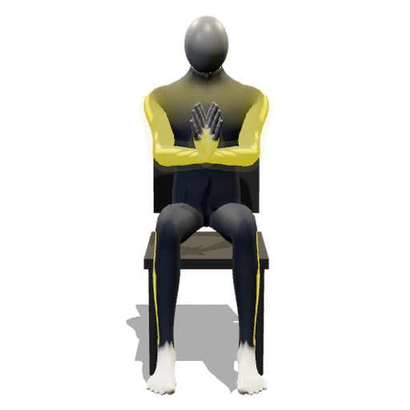
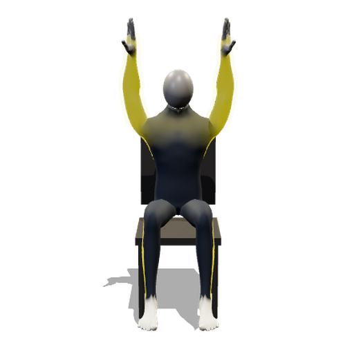

這個遊戲需要透過本機伺服器開啟，瀏覽器才允許使用鏡頭與載入程式模組。
直接雙擊 HTML（file://）會被瀏覽器擋住，畫面就會像現在這樣沒有反應。
正確開法：回到「節奏律動」資料夾，雙擊 🎵 開始玩.command，瀏覽器會自動打開遊戲。
若電腦已經在跑伺服器，也可以直接點：
http://localhost:8795/節奏律動/index.html
可能原因：網路不通（需要連線下載動作辨識模型），或程式檔案不完整。
樂齡復能跳舞機

拍手
高舉開鏡頭偵測你的動作，結束後有復能報表。第一次玩會先做 30 秒暖身校正。
兩人可以選不同難度。分數會換算成同一個標準再比，長輩對上年輕人也有機會贏。
💻 建議用平板或電腦來玩：螢幕大、音符看得清楚，鏡頭也拍得到整個上半身，動作抓得更準。用手機也可以，請橫放、放遠一點。
做錯動作不扣分，只會中斷連擊並提示正確動作；連擊滿 5 次就有 ×1.5 加成，之後每 10 次升一級，最高 ×3；
畫面上方的量表填到 80% 就過關；結算會記進排行榜。
重度個案建議關閉——關掉就沒有連擊中斷提示與競爭，只記錄、也不上榜。
| 總分 | 最長連續跟上 | ||
|---|---|---|---|
| 🏁 過關量表 | 連擊加成 | ||
| 跟上比例 | 平均反應偏移 | ||
| 剛剛好 / 太快 / 太慢 | 節奏傾向 | ||
| ⚡ 連拍總數 | 做錯動作（不扣分） |